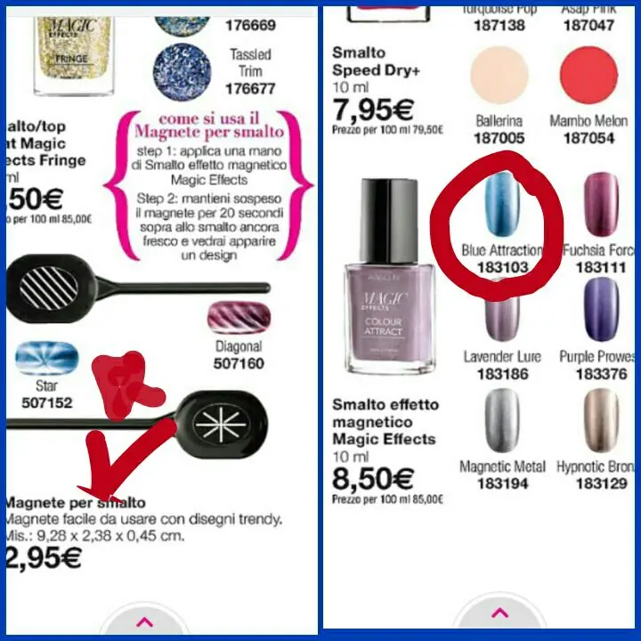
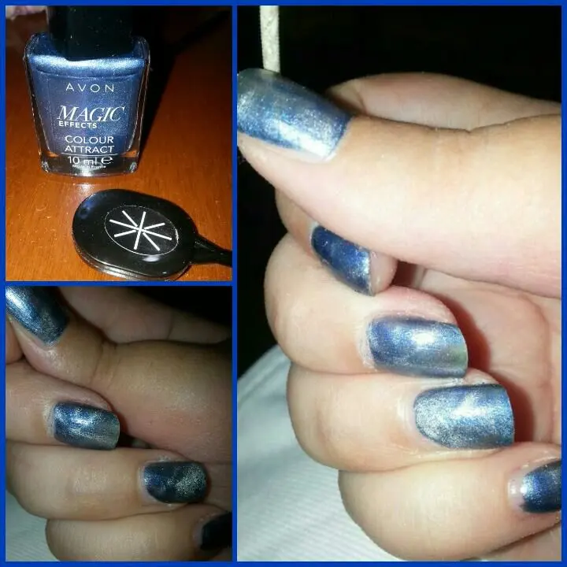

Smalto effetto magnetico - Magic effect Avon
Salveeeee
Sapete la mia passione per smalti e nail art . .oggi volevo parlarvi di uno degli smalti Avon. .non sono solita comperare smalti di questo brand. .mi piacciono più i rossetti, matite e altre cosine. .uso altre marche per quanto riguarda gli smalti ma questa volta a parte che mi è stato regalato ma la curiosità era molta per l'effetto che faceva.
Il titolo già vi dice di quale smalto si tratta. .ovvero del magnete che è molto particolare.
In pratica mi hanno regalato il magnete e lo smalto insieme per farmi provare.

Ci sono due tipi di magnete come potete notare. . Io ho quello a stella e lo smalto magnetico color - BLUE ATTRACTION.
Ero curiosa di provarlo subito appena arrivò ihihihihih
Non so se non sono stata capace io di usarlo oppure è proprio così l'effetto che deve avere ma non è marcatissima la stellina.
In pratica dovete stendere un bel pò di smalto e ancora bagnato dovete appoggiare sull'unghia questo magnete tenendolo a distanza di qualche millimetro per non far toccare e aspettare qualche secondo. Dopo questo dovrebbe vedersi la stellina ( o le righe, a seconda di come lo comprate).
La durata dello smalto posso dire che è molto buona. L'ho tenuto su per un bel pò di giorni. Per quanto riguarda l'effetto è molto carino ma niente di così effetto WOW come piace a me.
In compenso se non avete tempo per fare decorazioni alle unghie o non avete idee o peggio ancora chi è negata in queste cose, quest'effettino fa sembrare le unghia decorate e non le semplici unghia colorate a tinta unita.
Possiamo tenerlo presente per i momenti veloci ahahah
Il mio risultato intanto è questo:
